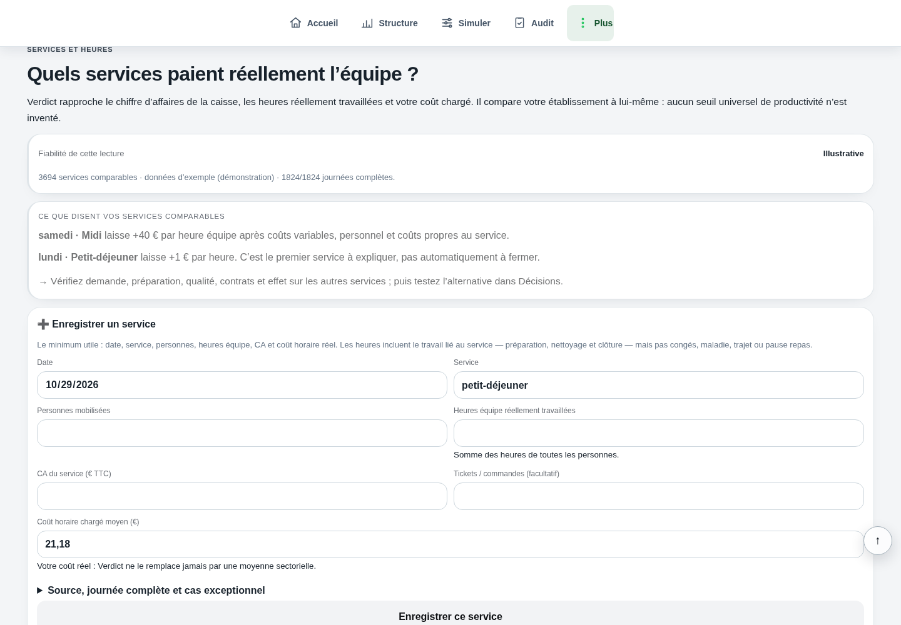

Comprendre le sujet
Personnel : examiner le service avant la personne
Un coût salarial et un ratio de ventes décrivent un périmètre de travail, pas la valeur d’un salarié.
La réponse complète et ses limites
Un coût salarial et un ratio de ventes décrivent un périmètre de travail, pas la valeur d’un salarié. Avant toute conclusion individuelle, examinez tâches, outils, formation, demandes simultanées et organisation. Chiffrez l’effet économique d’un scénario d’équipe avec des données comparables, sans transformer ce calcul en décision de personnel automatique.
Comprendre
La méthode, en clair.
LES POINTS QUI CHANGENT LA LECTURE
La méthode, en clair.
Des repères à appliquer dans votre établissement. Le détail reste accessible, sans perdre le fil.
Distinguer un constat d’une attribution
Un service lent peut venir d’un poste saturé, d’une préparation insuffisante ou de commandes arrivées ensemble. Les données économiques n’isolent pas ces causes. Décrivez les tâches observables et le contexte avant de désigner un responsable.
Comparez des services semblables, avec les compétences et moyens effectivement disponibles. Une heure d’accueil et une heure de préparation ne produisent pas un CA individuel comparable.
Mesurer une amélioration d’organisation
Testez une procédure, une formation ou une meilleure répartition des tâches. Relevez temps d’attente, erreurs, contribution et heures du service. Le coût de formation doit aussi rester visible.
Les sujets contractuels, disciplinaires ou de santé demandent leur propre traitement avec les interlocuteurs compétents. Le simulateur ne les évalue pas.
Calculer
LE LABORATOIRE
Vos hypothèses.
Une lecture immédiate.
Modifiez les données, observez le résultat, puis vérifiez ce que le calcul permet de conclure.
Interpréter
UN SCÉNARIO, JUSQU’AU BOUT
Le calcul, jusqu’au bout
Lire un service complet
Les 39 € sont une mesure d’équipe avant personnel et autres charges. Ils ne constituent pas une note par salarié.
Exemple fictif · hypothèses modifiables
| Contribution avant personnel | 7 800 € |
|---|---|
| Contribution par heure d’équipe | 39 € |
| Coût personnel moyen par heure | 22 € |
Les montants sont arrondis pour la lecture.
Les calculs gardent leur précision.
Les questions qui restent
Puis-je calculer le bénéfice produit par un salarié ?
Pas à partir du CA et des heures globaux. L’activité dépend d’un travail collectif, du prix, du flux clients et de l’organisation.
Une personne plus rapide améliore-t-elle forcément le résultat ?
Il faut aussi regarder qualité, erreurs, fatigue, capacité des autres postes et demande réellement présente.
Sur quoi repose cette lecture
Les formules et hypothèses sont affichées pour être contrôlées. Les exemples chiffrés sont fictifs et ne constituent pas des statistiques de métier. Les définitions et repères institutionnels utilisés par Verdict sont regroupés dans les sources.
Agir
Votre prochaine action
Décrivez un blocage de service, puis testez une solution d’organisation mesurable.
DANS L’APPLICATION VERDICT
Équipe et services : personnes, heures, CA, coût horaire et comparaison des services.

Équipe et services dans la démonstration fictive Brasserie Collet : comparer le CA et les heures des services, avec une fiabilité illustrative.
Voir l’écran en grand
Quels services paient réellement l’équipe ?
Fiabilité de cette lecture : Illustrative
samedi · Midi laisse +40 € par heure équipe
Cette lecture concerne le coût des services renseignés ; elle ne note pas individuellement les salariés et ne remplace pas la gestion des contrats ou congés.
LES CHIFFRES NE VIVENT PAS SÉPARÉMENT.
Reliez cette décision
au reste de votre activité.
Ventes, carte, inventaire : découvrez la lecture proposée par Verdict, avec vos données et vos hypothèses.